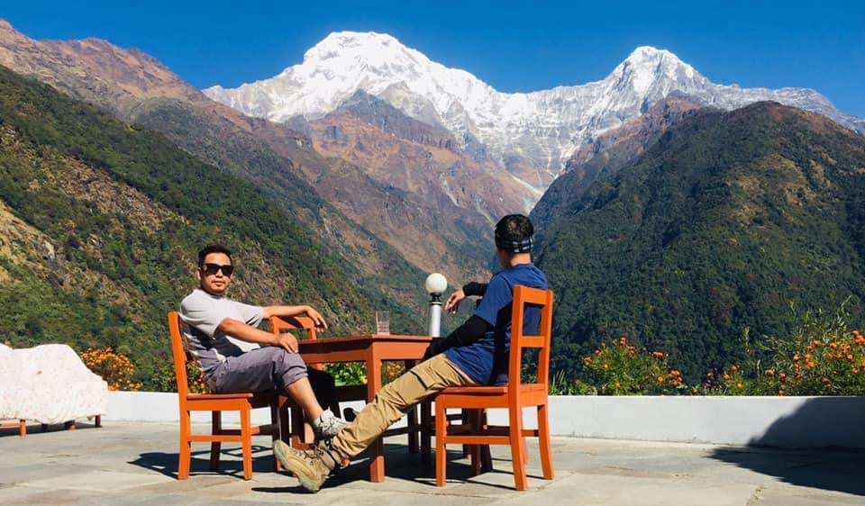
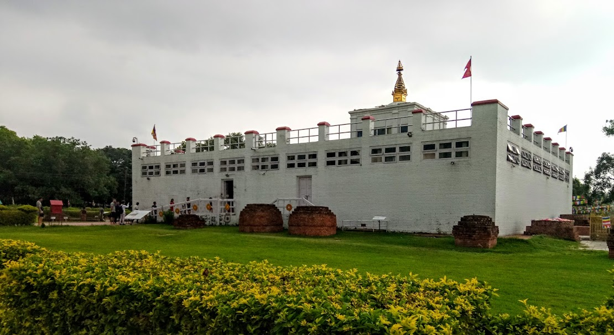
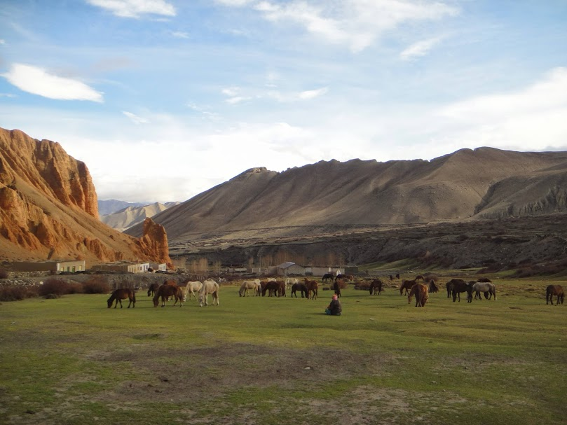
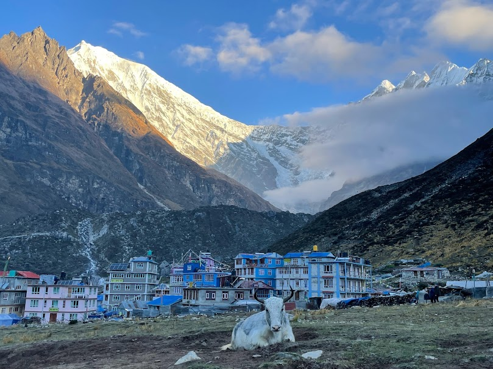
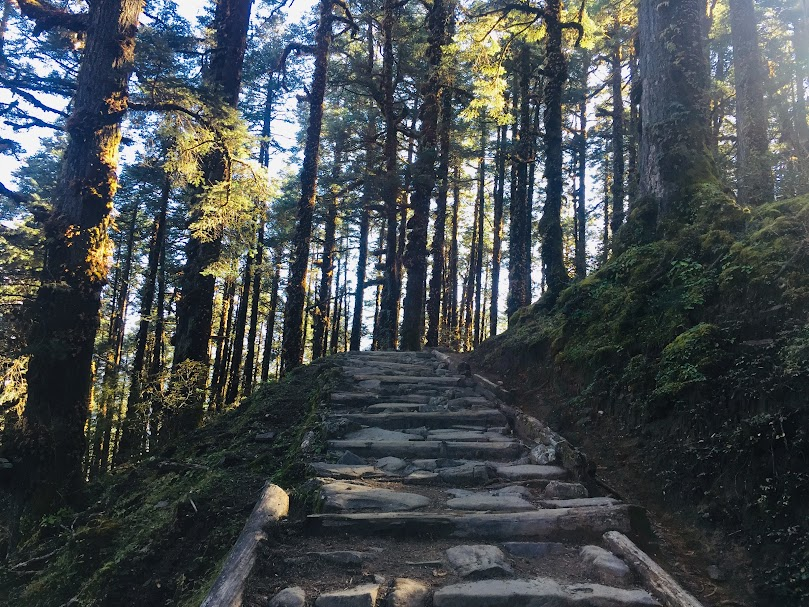

Top 5 Summer Holidays in Nepal
Nepal is a dream destination for travelers seeking a perfect blend of nature, culture, adventure, and relaxation. While many people associate Nepal with towering Himalayan peaks and trekking expeditions, the country also offers incredible summer holiday experiences for families, couples, adventure seekers, and cultural enthusiasts. Summer in Nepal brings lush green landscapes, blooming forests, refreshing mountain air, and fewer crowds in many popular destinations.
Whether you want to explore ancient heritage sites, witness breathtaking Himalayan sunrises, experience wildlife adventures, or trek through remote mountain valleys, Nepal has something special to offer. Here are the Top 5 Summer Holidays in Nepal that provide unforgettable memories and unique travel experiences.
Why Choose Nepal for Your Summer Holiday?
Nepal offers an incredible variety of travel experiences that few destinations can match. From ancient cities and spiritual landmarks to wildlife safaris and Himalayan adventures, every journey reveals something unique. Whether you choose the Kathmandu Valley Nagarkot Tour, Kathmandu Pokhara Ghandruk Tour, Kathmandu Pokhara Chitwan Lumbini Tour, Upper Mustang Trek, or Langtang Valley Trek, your summer holiday in Nepal will be filled with unforgettable landscapes, rich culture, warm hospitality, and lifelong memories.
Plan your summer getaway to Nepal and discover why this Himalayan nation continues to captivate travelers from around the world.
Is It Safe to Travel in Nepal During the Summer Season?
Yes, traveling in Nepal during the summer season is generally safe and can be a rewarding experience for visitors who plan their trip wisely. Summer in Nepal typically runs from June to August and coincides with the monsoon season. While some regions receive regular rainfall, many destinations remain accessible and offer unique advantages, including lush green landscapes, fewer crowds, and excellent cultural experiences.
The safety of traveling in Nepal during the summer largely depends on the destination you choose. Popular cities such as Kathmandu, Pokhara, Chitwan, and Lumbini remain open and welcoming throughout the season. Travelers can comfortably enjoy sightseeing, cultural tours, wildlife safaris, and spiritual journeys. The rain often falls in the late afternoon or evening, leaving mornings clear for exploration and outdoor activities.
For trekking enthusiasts, some Himalayan regions are particularly suitable during summer. The Upper Mustang Trek is one of the best choices because it lies in a rain-shadow area north of the Himalayas and receives very little rainfall. Similarly, parts of the Dolpo region offer excellent trekking conditions even during the monsoon months. The Langtang Valley Trek can also be enjoyed by experienced trekkers who are prepared for occasional rain and slippery trails.
Travelers should be aware that heavy rainfall can sometimes cause flight delays, road disruptions, and temporary landslides in certain mountain areas. Therefore, it is advisable to keep a flexible itinerary, monitor weather forecasts, and travel with an experienced local guide or reputable tour company. One of the greatest advantages of visiting Nepal in the summer is the beauty of the countryside. Hillsides become vibrant green, rice terraces flourish, waterfalls flow at their fullest, and the air feels fresh and clean. Tourist sites are generally less crowded than during the peak autumn season, allowing visitors to enjoy a more peaceful travel experience.
To ensure a safe and comfortable summer holiday in Nepal, visitors should pack waterproof clothing, sturdy footwear, insect repellent, and travel insurance. Staying hydrated and following local travel advice can further enhance the experience.
Overall, Nepal remains a safe and fascinating destination during the summer season. Whether you choose a cultural tour in Kathmandu Valley, a scenic holiday in Pokhara, a wildlife adventure in Chitwan, a spiritual visit to Lumbini, or a trek to Upper Mustang, summer offers a unique opportunity to discover Nepal's natural beauty, rich culture, and warm hospitality.
Kathmandu Valley Nagarkot Tour
The Kathmandu Valley Nagarkot Tour is one of the most popular summer holiday packages in Nepal. This tour combines the rich cultural heritage of Kathmandu Valley with the natural beauty of Nagarkot, a famous hill station known for its spectacular mountain views.
Travelers can explore UNESCO World Heritage Sites, including ancient temples, royal palaces, and historic courtyards in Kathmandu, Bhaktapur, and Patan. After discovering Nepal's cultural treasures, the journey continues to Nagarkot, where visitors can enjoy a peaceful atmosphere and breathtaking sunrise views over the Himalayan range. On clear days, panoramic views of Everest and other snow-capped peaks are visible from the viewpoint.
This tour is perfect for families, honeymooners, and travelers seeking a short yet rewarding holiday in Nepal.
.jpg)
Kathmandu Valley Nagarkot Tour Highlights
Explore the cultural treasures of Kathmandu Valley, home to several UNESCO World Heritage Sites.
Visit the ancient cities of Kathmandu, Bhaktapur, and Patan, renowned for their rich history, art, and architecture.
- Discover centuries-old temples, royal palaces, courtyards, and traditional Newari settlements.
- Experience the spiritual atmosphere of sacred Hindu and Buddhist pilgrimage sites.
- Enjoy a scenic drive through picturesque countryside and charming hill villages.
- Witness a breathtaking sunrise over the Himalayas from Nagarkot, one of Nepal's most famous viewpoints.
- Marvel at panoramic views of snow-capped peaks, including Mount Everest on clear days.
- Capture stunning photographs of the Himalayan range, rolling hills, and terraced farmlands.
- Relax in the peaceful surroundings of Nagarkot, away from the busy city environment.
- Experience the perfect blend of culture, nature, history, and mountain scenery on a short holiday.
- Taste authentic Nepali cuisine and traditional Newari delicacies during the tour.
- Ideal for families, couples, honeymooners, photographers, and first-time visitors to Nepal.
- Enjoy comfortable accommodations and easy accessibility from Kathmandu.
- Discover Nepal's rich cultural heritage and natural beauty within a few memorable days.
Kathmandu Pokhara Ghandruk Tour
The Kathmandu Pokhara Ghandruk Tour offers a wonderful combination of cultural sightseeing, scenic beauty, and village experiences. Starting in Kathmandu, travelers explore ancient temples and cultural landmarks before heading to the beautiful lakeside city of Pokhara. Pokhara is famous for its stunning views of the Annapurna Range, tranquil lakes, waterfalls, and caves. The tour then continues to Ghandruk, a traditional Gurung village nestled in the Annapurna region. Surrounded by majestic mountain scenery, Ghandruk offers visitors an authentic glimpse into local culture, traditions, and rural mountain life. This tour is ideal for travelers who want to experience both Nepal's cultural heritage and the natural beauty of the Himalayas without undertaking a long trek.

Kathmandu Pokhara Ghandruk Tour Highlights
Explore the cultural and historical wonders of Kathmandu Valley, including ancient temples, stupas, and UNESCO World Heritage Sites.
Discover the vibrant heritage, art, and architecture of Nepal's capital city.
- Enjoy a scenic journey to Pokhara, Nepal's most beautiful lakeside destination.
- Witness breathtaking views of the Annapurna, Machhapuchhre (Fishtail), Dhaulagiri, and Manaslu mountain ranges.
- Relax by the tranquil waters of Phewa Lake and enjoy the peaceful lakeside atmosphere.
- Visit popular attractions in Pokhara, including Davis Falls, Gupteshwor Cave, Seti Gorge, and the World Peace Pagoda.
- Experience spectacular sunrise and sunset views over the Himalayas from Pokhara viewpoints.
- Travel to Ghandruk, one of the most beautiful traditional Gurung villages in the Annapurna Region.
- Immerse yourself in authentic Gurung culture, local traditions, and warm mountain hospitality.
- Explore traditional stone houses, terraced farmlands, and picturesque mountain landscapes.
- Enjoy panoramic views of Annapurna South, Hiunchuli, Machhapuchhre, and Gangapurna from Ghandruk.
- Experience a taste of trekking in Nepal without committing to a long and challenging trek.
- Capture stunning photographs of Himalayan peaks, lush hills, waterfalls, and traditional villages.
- Savor authentic Nepali and local Gurung cuisine throughout the journey.
- Perfect for families, couples, nature lovers, photographers, and first-time visitors to Nepal.
- Experience the perfect combination of culture, nature, mountain scenery, and village life in one memorable holiday.
Kathmandu Pokhara Chitwan Lumbini Tour
For travelers seeking a complete Nepal experience, the Kathmandu Pokhara Chitwan Lumbini Tour is an excellent choice. This diverse journey showcases Nepal's culture, wildlife, natural beauty, and spiritual heritage. The adventure begins in Kathmandu with visits to historic temples and heritage sites. Travelers then journey to Pokhara, where they can enjoy stunning mountain views and relaxing lakeside surroundings. The tour continues to Chitwan National Park, where exciting jungle activities such as jeep safaris, canoe rides, bird watching, and wildlife encounters offer the chance to spot rhinos, deer, crocodiles, and many exotic bird species.
The final destination is Lumbini, the birthplace of Lord Buddha and one of the most important pilgrimage sites in the world. The peaceful monasteries, sacred gardens, and historical monuments create a truly spiritual atmosphere. This tour is perfect for families, cultural travelers, and anyone wishing to explore Nepal's most iconic destinations in one trip.

Kathmandu Pokhara Chitwan Lumbini Tour Highlights
- Explore the cultural richness of Kathmandu Valley, including UNESCO World Heritage Sites, ancient temples, stupas, and royal palaces.
- Discover the natural beauty of Pokhara, a scenic lakeside city surrounded by the Annapurna Himalayan range.
- Enjoy breathtaking sunrise and mountain views from Sarangkot and other famous viewpoints in Pokhara.
- Experience peaceful boating on Phewa Lake with stunning reflections of Machhapuchhre (Fishtail) Mountain.
- Go on an exciting jungle safari in Chitwan National Park, one of Nepal’s top wildlife destinations.
- Spot rare wildlife such as one-horned rhinoceros, Bengal tiger (lucky sightings), deer, crocodiles, and exotic birds.
- Enjoy thrilling activities in Chitwan, including jeep safari, canoe ride, jungle walk, and bird watching.
- Visit Lumbini, the sacred birthplace of Lord Buddha and an important UNESCO World Heritage Site.
- Explore peaceful monasteries, the Ashoka Pillar, Maya Devi Temple, and sacred garden areas in Lumbini.
- Experience a perfect blend of culture, nature, wildlife, and spirituality in one complete Nepal tour package.

Upper Mustang Overland Jeep Tour
The Upper Mustang Overland Jeep Tour is one of the most thrilling and scenic journeys in Nepal, offering travelers a rare opportunity to explore the ancient Himalayan kingdom of Mustang in comfort and style. Often called the “Last Forbidden Kingdom,” Upper Mustang lies in the trans-Himalayan region of Nepal and is known for its unique desert landscapes, centuries-old Tibetan culture, and dramatic mountain scenery.
Unlike traditional trekking routes, the Upper Mustang Jeep Tour allows travelers to experience this remote region through a comfortable overland journey, making it ideal for families, senior travelers, and those looking for a luxury adventure. This Overland Jeep Tour in Nepal takes you deep into the mystical landscapes where time seems to stand still, passing through ancient caves, monasteries, and traditional walled villages. This Upper Mustang Tour is especially popular during the monsoon season, making it a perfect choice for a Summer Holiday in Nepal. The region lies in the rain-shadow of the Himalayas, ensuring dry weather, clear skies, and excellent driving conditions throughout the journey.
Starting from Pokhara, the Upper Mustang Overland Jeep Tour takes you through Jomsom, Kagbeni, and eventually to the ancient capital of Lo Manthang. Along the way, travelers enjoy breathtaking views of Nilgiri, Dhaulagiri, and Annapurna ranges, while experiencing the untouched Tibetan-influenced lifestyle of the local people. Whether you are planning a Tour in Nepal, a Family Tour in Nepal, or a comfortable adventure experience, this journey offers the perfect blend of culture, nature, and exploration. It is also considered one of the most exclusive and Luxury Summer Holidays in Nepal, thanks to its remote location, cultural richness, and scenic beauty.

Upper Mustang Overland Jeep Tour – Highlights
Explore the legendary “Last Forbidden Kingdom” of Upper Mustang.
Enjoy a comfortable and scenic Upper Mustang Overland Jeep Tour through the Himalayas.
- Visit the ancient walled city of Lo Manthang, rich in Tibetan heritage.
- Experience unique desert-like landscapes and dramatic cliffs of Mustang.
- Drive through traditional villages like Kagbeni and Chele along the Kali Gandaki Valley.
- Witness stunning views of Annapurna, Dhaulagiri, and Nilgiri mountain ranges.
- Discover centuries-old monasteries, caves, and Buddhist heritage sites.
- Enjoy a perfect Summer Holiday in Nepal with dry weather and clear skies.
- Ideal Family Tour in Nepal offering safe and comfortable overland travel.
- Experience one of the most exclusive and scenic Luxury Summer Holidays in Nepal.

Langtang Valley Trek
The Langtang Valley Trek is one of the most rewarding trekking holidays near Kathmandu. Known for its stunning mountain scenery, diverse landscapes, and welcoming local communities, Langtang Valley offers an unforgettable Himalayan experience.
The trail passes through dense forests, alpine meadows, traditional Tamang villages, and glacial valleys before reaching the heart of Langtang Valley. Trekkers are rewarded with magnificent views of Langtang Lirung and the surrounding snow-capped peaks.
Summer transforms the valley into a vibrant green paradise filled with blooming wildflowers and flowing mountain streams. The trek provides a perfect balance of natural beauty, cultural encounters, and moderate adventure, making it suitable for both beginners and experienced trekkers.

Langtang Valley Trek Highlights
- Experience one of the most beautiful and accessible trekking routes close to Kathmandu.
- Enjoy breathtaking views of Langtang Lirung, Ganesh Himal, and surrounding snow-capped peaks.
- Walk through Langtang National Park, rich in biodiversity and natural beauty.
- Explore traditional Tamang villages and experience their warm hospitality and unique culture.
- Trek through lush rhododendron and bamboo forests filled with wildlife and bird species.
- Discover serene alpine meadows and peaceful glacial valleys along the trail.
- Reach Kyanjin Gompa, a beautiful monastery surrounded by dramatic Himalayan scenery.
- Witness stunning summer landscapes with green hills, wildflowers, and flowing rivers.
- Enjoy a perfect balance of adventure, culture, and natural beauty suitable for all trekkers.
- Experience a rewarding Himalayan journey, ideal for both beginners and experienced hikers
